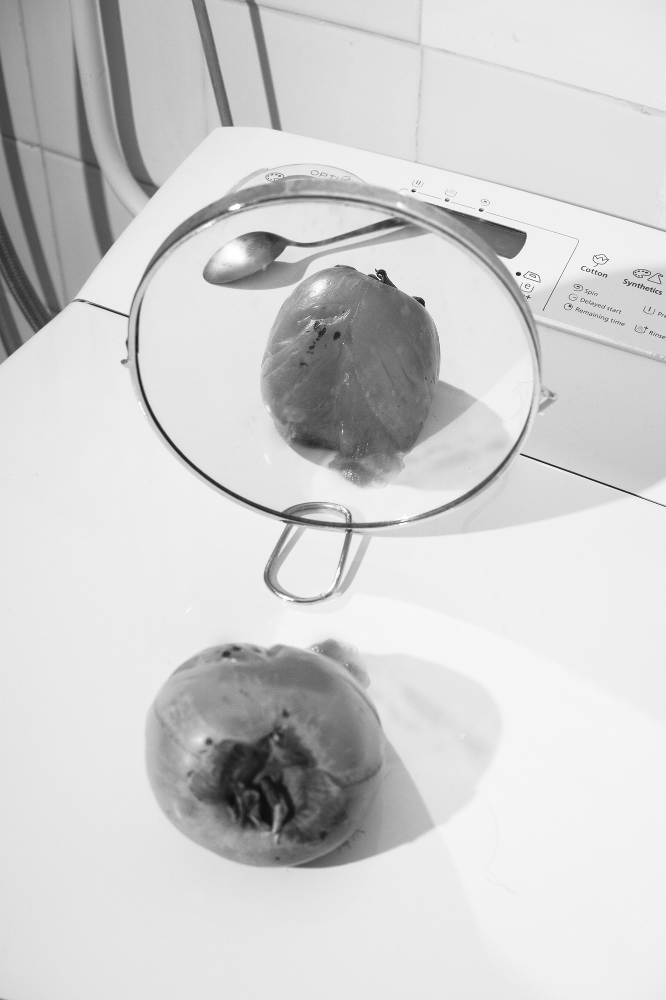
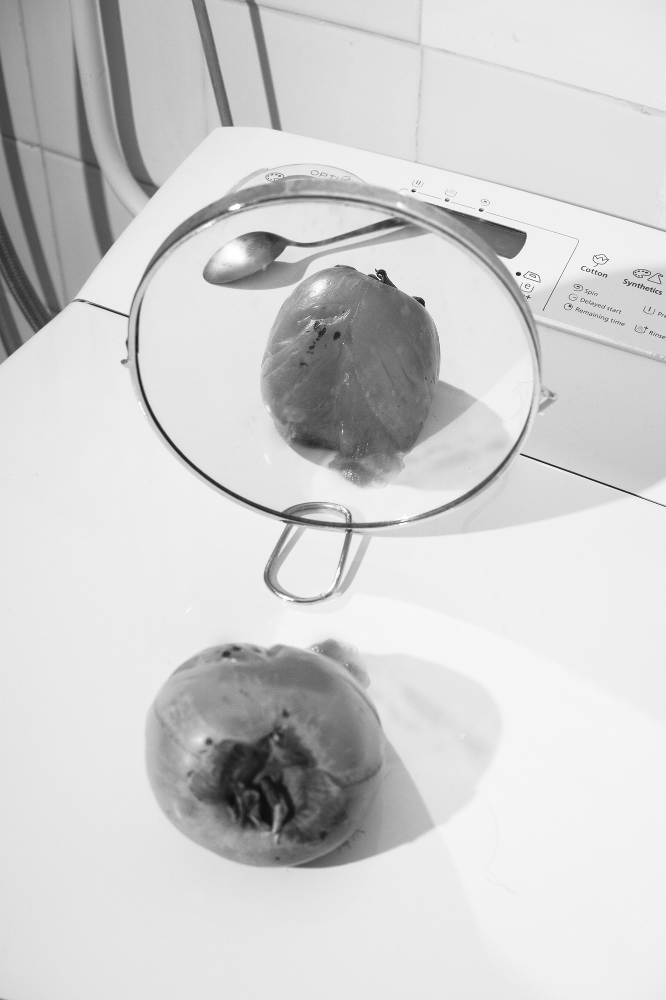
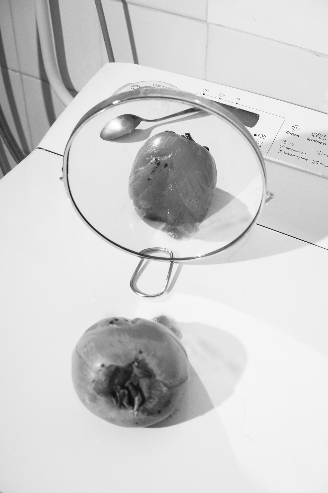

The fossils, the ashes and other remains of existence is an ongoing work visualizing the
complexity and the many different stages of experiencing loss. It aims to open up a new
ontological dimension of the way we understand death through our connections to physical
objects and the active involvement in the photographic event.
The project emerged from a personal trauma - the loss of my father, and my urgency to accept
the incompleteness a death brings. Through an active engagement in the process, photography
becomes a tool for post-traumatic healing. The outcome is a posthumous exploration together
with an incorporeal protagonist that signifies at once both presence and absence.
